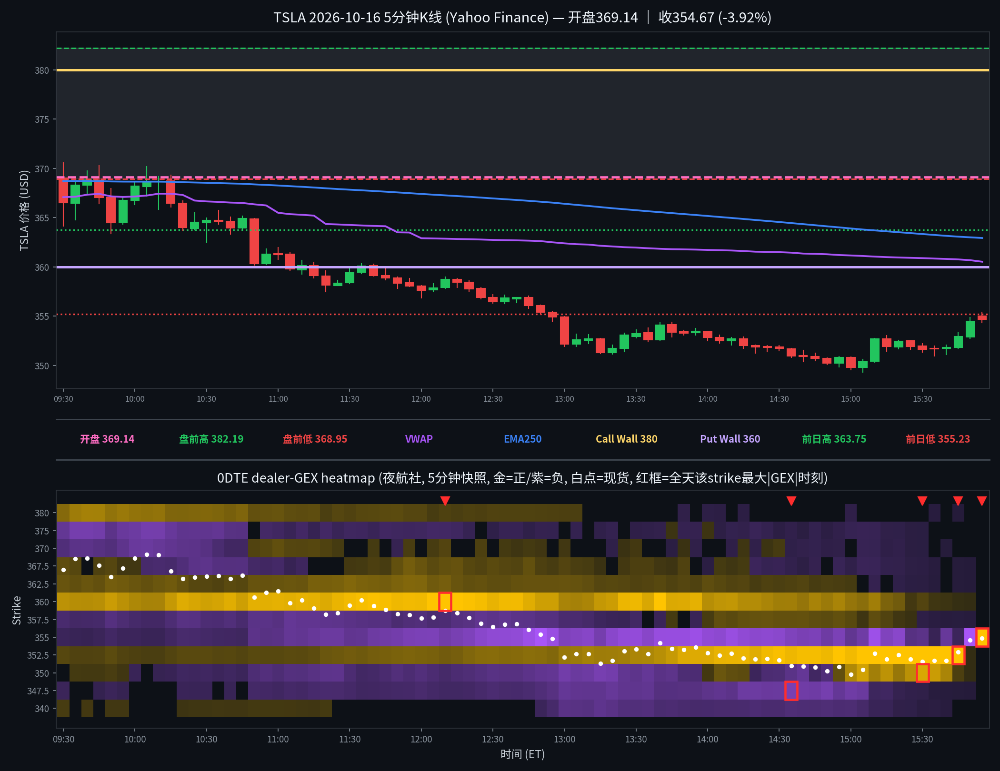

TSLA 日内报告
2026年10月16日 · 周五 · 日内报告
早盘分析
2026-10-16 07:20 MDT｜Alpha夜航社 #junkman-analysis｜作者 junk_man（APP徽章）
━━━━━━━━━━━━━━━━━━━━ ⚡ TSLA 💵 盘前参考价 373.485｜🟢 正 GEX｜钉住/均值回归 🔴 375 CALL WALL 下方｜🟣 372.5 MAGNET 上方 🟢 360 PUT WALL 上方｜🔵 370.4 FLIP 上方 🎯 交易区间 360–375｜上墙延伸 375–380 📊 IV 预期振幅｜🚀 极高波动｜IV 70.1% (1DTE)｜1σ 预计振幅 ±8.96 (±2.40%)｜波动区间 364.53–382.44 🛟 潜在低点观察区 370.4–372.5（非最低价预测）；若失守 370.4，取消本轮接底，等重新收复 372.5 并回踩。 🧭 开盘分支｜若开在 372.5 下方：反抽不过，先看 370.4（若直接低开至中轴 365 附近，旧破位段已跳过，转看中轴争夺与防守）；375 上方：回踩守住，先看 377.5；两者之间或贴近边界，等待确认。 🎯 交易机会 • 🚀 突破 Call：站稳 375、回踩有效 → 377.5 → 380；跌破回踩低点退出。 380 再站稳，才看 382.5 → 385。 • 📉 受阻 Put：375 受阻，再失守 372.5 → 370.4 → 370；站稳 375 取消。 • 🔻 破位 Put：跌破 372.5、反抽不过 → 370.4 → 370；失守中轴 365 后，才看终极防线 Put Wall 360；收回 372.5 取消。 • 🛟 抄底 Call：下探 370.4–372.5 后重新收复 372.5、回踩守住 → 375 → 377.5；再破回踩低点退出，不接持续下跌。 • 🛡️ 防守 Call：深探至 Put Wall 360 附近获支撑企稳、回踩守住 → 362.5；有效跌破 360 退出。
盘前预测 · 情况未发生
5 分钟 K 线 × 0DTE heatmap
0DTE，夜航社 78 档 5 分钟快照；白点为每档现货位置

heatmap解读（0DTE，夜航社 78 档 5 分钟快照）
0DTE全天78档5分钟快照（09:30–15:55 ET）。开盘 369，收 354.67（-3.88%），盘前高/低 382.19/368.95。
- 早盘(09:30) 现价 366.47：上方强节点 380(+16.9M)；下方强节点 360(+47.8M)；负gamma带 375(-23.8M)。
- 节点强度大变化（首→末）：355 -3.0M→+174.0M（+5878%）；360 +47.8M→+0.0M（-100%）；375 -23.8M→+0.0M（+100%）；380 +16.9M→+0.0M（-100%）；370 -11.7M→+0.0M（+100%）；365 -10.7M→+0.0M（+100%）。
- 尾盘(15:55) 现价 354.86：强正节点 355(+174.0M)；负gamma带 无。
- 大单流（premium≥200k/size≥50/DTE≤1，共17笔）：call主动买 1.89M / 主动卖 0.66M；put主动买 2.26M / 主动卖 1.04M。call买=看多、put买=看空/对冲、put卖=看多/收保费。
全天最大节点 TOP5
{'strike': 352.5, 'analysis': '全天变化：+3.1M（09:30）→ +714.4M（15:45，爆发230倍）→ 0（15:50消退）。影响时段：下午14:30之后。影响方式：价格崩跌过程中352.5的put wall爆炸性增厚，成为全天最强磁铁；价格最低349.33在其下方企稳后反弹收354.67，它是尾盘的终极地板。'}
{'strike': 355, 'analysis': '全天变化：-3.0M（09:30负gamma）→ -87.7M（12:45加深）→ +174.0M（15:55翻正）。影响时段：下午。影响方式：从负翻正的超级反转，收盘时成为最强正节点；收盘354.67正好在其下方0.33，它是收盘的钉住位。'}
{'strike': 360, 'analysis': '全天变化：+47.8M（09:30早盘magnet）→ +112.1M（12:10峰值）→ 0（15:50）。影响时段：上午到中午。影响方式：Junk-man的put wall，开盘369在其上方；价格11点附近跌破360后墙位一路衰减至归零，是当天最重要的墙体破位。'}
{'strike': 350, 'analysis': '全天变化：+0.8M → +70.0M（15:30，增长87倍）→ 0。影响时段：下午。影响方式：价格下跌过程中在下方形成的支撑节点；最低349.33短暂跌破350后迅速收回，它提供了低点的缓冲。'}
{'strike': 347.5, 'analysis': "全天变化：-2.8M → -42.7M（14:35，加深15倍）→ 0。影响时段：下午。影响方式：下方的负gamma加速带；价格最低349.33未触及它，它是悬在下方的'再跌就加速'的威胁，实际未被触发。"}
亮度口径：p99 截断 104.8M；红框 = 全天该 strike 最大 |GEX| 时刻。
资金流总结（0DTE，全天17笔；premium≥$20万｜size≥50｜DTE≤1｜side=B/M/A）
- 09:30
- 10:00
- 11:30
- 12:00
- 13:00
- 14:30
- 15:00
17 笔：call主动买 1.89M / 主动卖 0.66M，put主动买 2.26M / 主动卖 1.04M。put 主动买最多（看空/对冲），call 买大于卖；整体偏空，与价格大跌一致。
分析总结
开盘 369.00，开在 Junk-man 的 magnet 372.5 下方、flip 370.4 下方（Junk-man 口径 call 375 / put 360 / magnet 372.5）；heatmap 早盘最强节点是 360（+47.8M），上方 375 为负gamma带（-23.8M）。
价格全天单边下跌：开盘后反抽不过372.5，11点附近跌破 put wall 360，随后一路下行至最低349.33，收354.67（-3.88%）；360 墙位从+112.1M衰减至归零，是当天最重要的墙体破位。
尾盘 gamma 结构剧变：352.5 put wall 爆发230倍至+714.4M（15:45），355 从负翻正至+174.0M；价格在352.5/355一带企稳反弹，是典型的'破位后新墙形成'的止跌结构。
大单流17笔：put 主动买 2.26M 最多（看空/对冲），与下跌一致；Junk-man 的'破位 Put'剧本（跌破372.5→370.4→365→360终极防线）基本走完，价格最终在360下方、352.5上方找到支撑。
heatmap 亮度=平方根连续渐变（p99 裁剪）；K线=Yahoo Finance 5分钟；heatmap=夜航社 dealer-GEX 5分钟快照；页面为收盘后静态快照，不实时更新行情。
收盘后的静态快照；页面不在打开时更新行情。